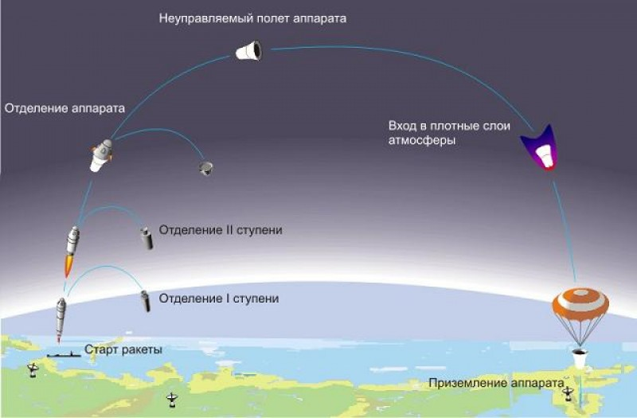
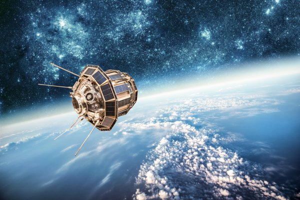
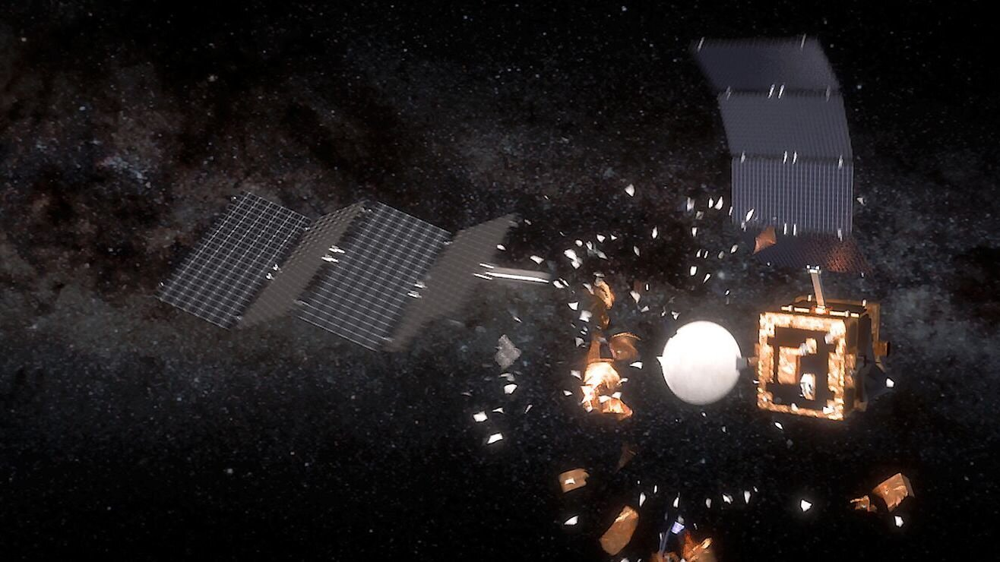

Космические аппараты
«Человек должен подняться над Землей — в атмосферу и за ее пределы — ибо только так он полностью поймет мир, в котором
живет».
Космические аппараты во всем своем многообразии - одновременно гордость и забота человечества. Их созданию
предшествовала многовековая история развития науки и техники. Космическая эра, позволившая людям со стороны взглянуть на
мир, в котором они живут, вознесла нас на новую ступень развития. Ракета в космосе сегодня – это не мечта, а предмет
забот высококлассных специалистов, перед которыми стоят задачи по усовершенствованию существующих технологий. О том,
какие виды космических аппаратов выделяют и чем они друг от друга отличаются, пойдет речь в статье.
Сократ
Определение
Космические аппараты – обобщенное название для любых устройств, предназначенных для работы в условиях космоса. Есть несколько вариантов их классификации. В самом простом случае выделяют космические аппараты пилотируемые и автоматические. Первые, в свою очередь, подразделяются на космические корабли и станции. Различные по своим возможностям и назначению, они сходны во многом по строению и используемому оборудованию.Особенности полета

Любой космический аппарат после старта проходит через три основных стадии: выведение на орбиту, собственно полет и
посадка. Первый этап предполагает развитие аппаратом скорости, необходимой для выхода в космическое пространство. Для
того чтобы попасть на орбиту, ее значение должно быть 7,9 км/с. Полное преодоление земного притяжения предполагает
развитие второй космической скорости, равной 11,2 км/с. Именно так движется ракета в космосе, когда ее целью являются
удаленные участки пространства Вселенной.
×

Стадии запуска ракеты
После освобождения от притяжения следует второй этап. В процессе орбитального полета движение космических аппаратов происходит по инерции, за счет приданного им ускорения. Наконец, стадия посадки предполагает снижение скорости корабля, спутника или станции практически до нуля.
Искусственные спутники Земли
Первыми аппаратами, запущенными в космос, были искусственные спутники Земли. Физика и ее законы делают выведение любого подобного устройства на орбиту непростой задачей. Любой аппарат должен преодолеть притяжение планеты и затем не упасть на нее. Для этого спутнику необходимо двигаться с первой космической скоростью или чуть быстрее. Над нашей планетой выделяют условную нижнюю границу возможного расположения ИСЗ (проходит на высоте 300 км). Более близкое размещение приведет к достаточно быстрому торможению аппарата в условиях атмосферы.

×

Искуственный спутник Земли
Первоначально только ракеты-носители могли доставлять на орбиту искусственные спутники Земли. Физика, однако, не стоит на месте, и сегодня разрабатываются новые способы. Так, один из часто используемых в последнее время методов – запуск с борта другого спутника. В планах применение и других вариантов.
Орбиты космических аппаратов, вращающихся вокруг Земли, могут пролегать на разной высоте. Естественно, от этого зависит и время, требуемое на один круг. Спутники, период обращения которых равен суткам, размещаются на так называемой геостационарной орбите. Она считается наиболее ценной, поскольку аппараты, находящиеся на ней, для земного наблюдателя кажутся неподвижными, а значит, отсутствует необходимость создания механизмов поворота антенн.
Технически, спутник это любой объект, который вращается вокруг планеты или меньшего небесного тела. Астрономы классифицируют луны как природные спутники, и на протяжении многих лет они составили список из сотен таких объектов, обращающихся вокруг планет и карликовых планет нашей Солнечной системы. К примеру, насчитали 67 лун Юпитера. И до сих пор продолжают находить новые луны.
Техногенные объекты, вроде «Спутника» и Explorer, также можно классифицировать как спутники, поскольку они, как и луны, вращаются вокруг планеты. К сожалению, человеческая активность привела к тому, что на орбите Земли оказалось огромное количество мусора. Все эти куски и обломки ведут себя как и крупные ракеты — вращаются вокруг планеты на высокой скорости по круговому или эллиптическому пути. В строгом толковании определения можно каждый такой объект определить как спутник. Но астрономы, как правило, считают спутниками те объекты, которые выполняют полезную функцию. Обломки металла и другой хлам попадают в категорию орбитального мусора.
Орбитальный мусор

Орбитальный мусор поступает из многих источников: взрыв ракеты, который производит больше всего хлама.
Астронавт расслабил руку — если астронавт ремонтирует что-то в космосе и упускает гаечный ключ, тот потерян навсегда.
Ключ выходит на орбиту и летит со скоростью около 10 км/с. Если он попадет в человека или в спутник, результаты могут
быть катастрофическими. Крупные объекты, вроде МКС, представляют собой большую мишень для космического мусора.
Выброшенные предметы. Части пусковых контейнеров, шапки объективов камер и так далее
×

Космический мусор
NASA вывело специальный спутник под названием LDEF для изучения долгосрочных эффектов от столкновения с космическим мусором. За шесть лет инструменты спутника зарегистрировали около 20 000 столкновений, некоторые из которых были вызваны микрометеоритами, а другие орбитальным мусором. Ученые NASA продолжают анализировать данные LDEF. А вот в Японии уже планируют развернуть гигантскую сеть для отлова космического мусора.